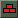

What type of addon?
Introduction
As said in previous sections, MIGI uses two specific addon formats, either with the prefix p_ or m_
M_ VPKs
Recommended
M_ VPKs are what you should use most of the time, they're easier to share around as well.
M_ Folders are "src files", this is what we use to generate the vpk file which is then used by the game.
Once ready to test your addon, you need to click the  button on the left to make it usable inside MIGI.
If that button turns yellow it means your addon is outdated and needs to be rebuilt, if it's green it means it's up-to-date.
You should then see a file named the same as your folder but with .vpk at the end.
You can also create folder named #pak at the root to mimic what a P_ folder does.
Example: m_myaddon/#pak/materials/panorama/images/equipment/ak47.svg which will then be moved to the Pak01 on each full build.
Note:
Do not use #pak for every single file. Only files that are originally inside CS:GO's Pak01 in order to replace them.
P_ Folders
Recommended for personal use and tests
It is impossible to replace an existing asset unless overwritten inside a new Pak.
MIGI supports doing so using those P_ folders, which gets their files added to the new additive Pak01 when building. This is identical to what the #pak folder does on M_ addons except without the whole "extracting from the vpk" stuff.
Note:
While P_ folders can seem simply better, MIGI requires to copy their content ON EVERY FULL BUILD, which is also true for the #pak folder inside M_ addons. The more data P_ folders will have,
the longer it'll take MIGI and VPK.EXE to copy those files and compress them in that new Pak01. Only use them if you're certain that you need to replace all those files and cannot use a M_ vpk instead.